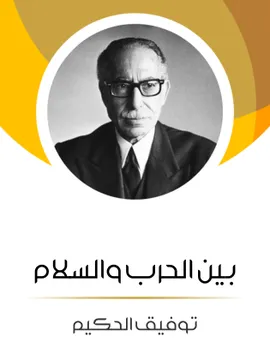

بين الحرب والسلام

قراءة عربية أصلية محددة النطاق في الصفحات 6، 7 من ملف PDF المرتبط، وليست تلخيصا كاملا للكتاب. نناقش ما تدعمه هذه المقاطع فقط.
السلام والسياسة وحديث عن الثالث
في هذه المسرحية الرمزية القصيرة يجري الحوار بين «السلام» و«السياسة» بصيغة غزل مكشوف: السلام ينكر أن يكون الحرب قادرًا على شعور رقيق، والسياسة ترد بدلال أن الحرب لا يعيش إلا بها. ثم تروي السياسة كيف ضبطت السلام نفسه يغازلها هاتفيًا ويصفر أغنيته المعهودة أمام نافذتها ويرسل هداياه مع البواب، فينقلب إنكار السلام إلى سؤال قلق: هل سألك عني؟
زاوية وحدود القراءة
هذه قراءة في المشهد الأول من الصفحتين 6 و7، وهي بناء رمزي هزلي لا موقف سياسي بعينه ولا تعليق على حدث بذاته. نقرأ العلاقة بين الشخصيات الثلاث بوصفها مجازًا دراميًا، ولا نستبق خاتمة النص القصير ولا نثبت منه نظرية في العلاقات الدولية.
الطبعة والقراءة
هذه النسخة من الكتاب صادرة ومتاحة مجانًا بموجب اتفاق قانوني بين مؤسسة هنداوي وأسرة السيد الأستاذ توفيق الحكيم.
تنزيل PDF المجاني ↓ القراءة والمصدر الرسمي ↗